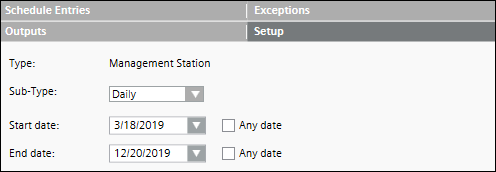
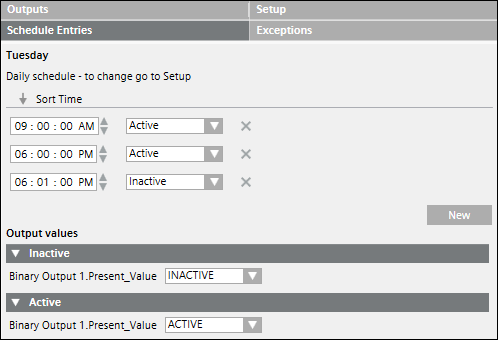

Daily Management Station Schedule
You can create a daily schedule from the Sub-Type drop-down list in the Setup tab and specify either similar active or inactive values for all days of the week or different values for individual days from the Schedule Entries tab.
The daily schedules are treated as single day schedules that are valid till 11.59 PM. Post mid-night the next day's daily schedule is functional.
For example, the daily schedule for Monday, will be functional from 12.00 AM to 11.59 PM.


The daily schedule will trigger an Inactive value at midnight. The last state of the day will not be retained post-midnight until the next day schedule entry is triggered.
Consider a schedule with the time periods, Active : 12:00 a.m., In-Active : 9:00 a.m., Active : 6:00 p.m. In this case, even though the value is set to active at 6 p.m., there is a switchover from Active to Inactive at around 11:59 p.m. Post-midnight at 12.00 a.m., this value changes back to Active.